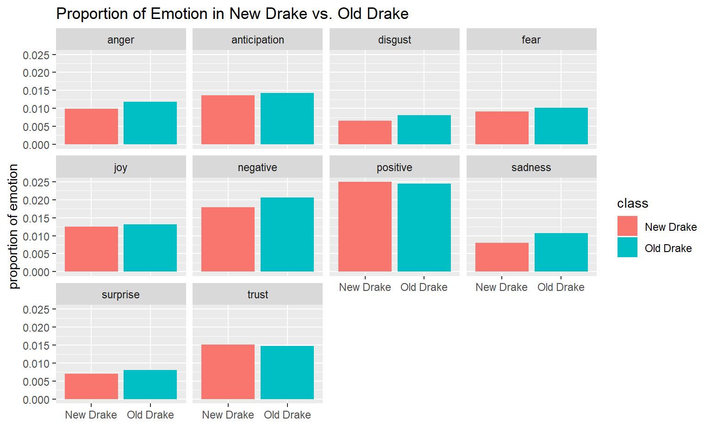
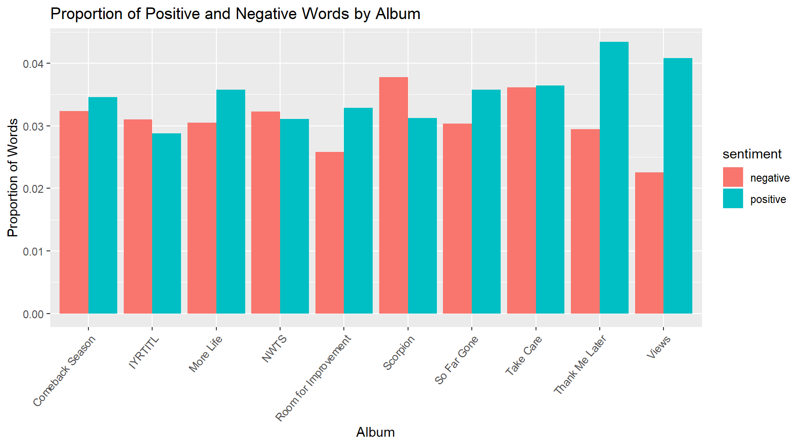
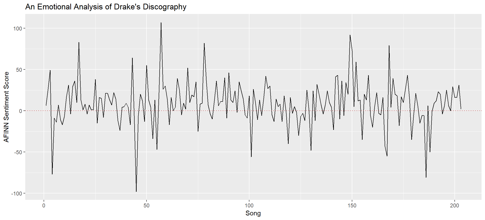
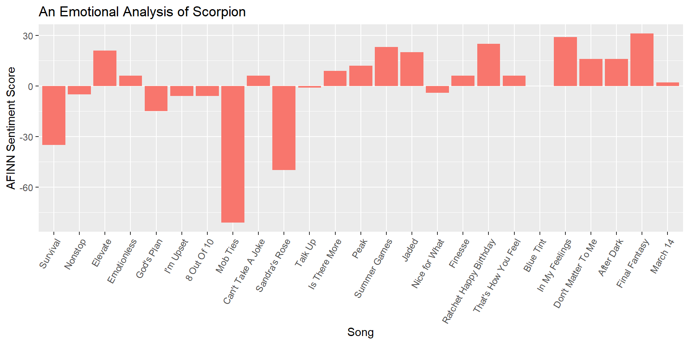
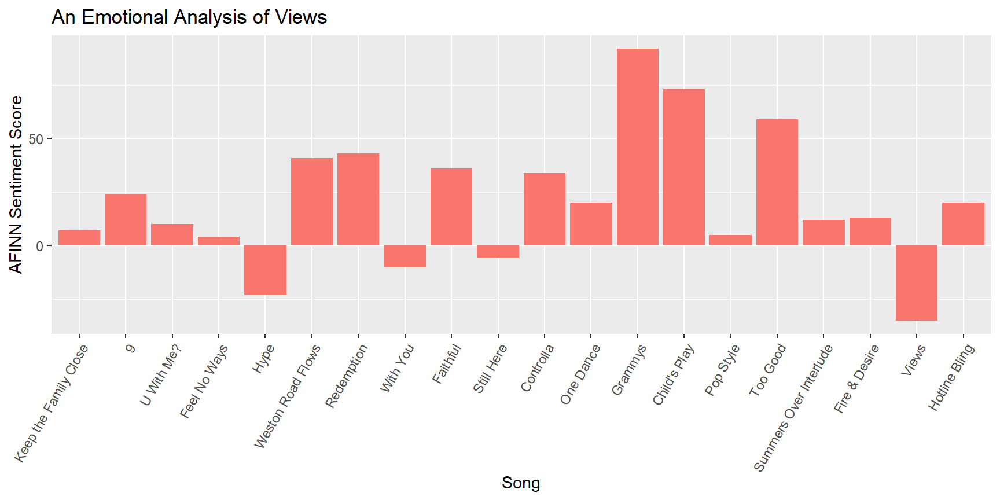
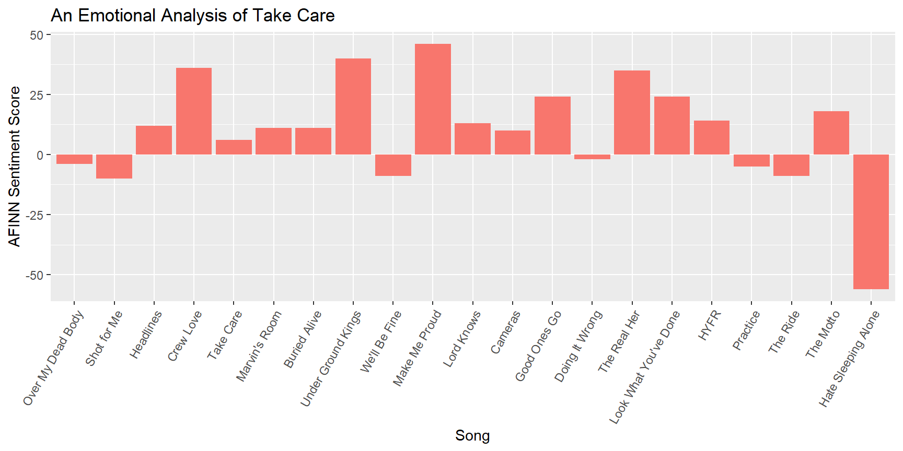
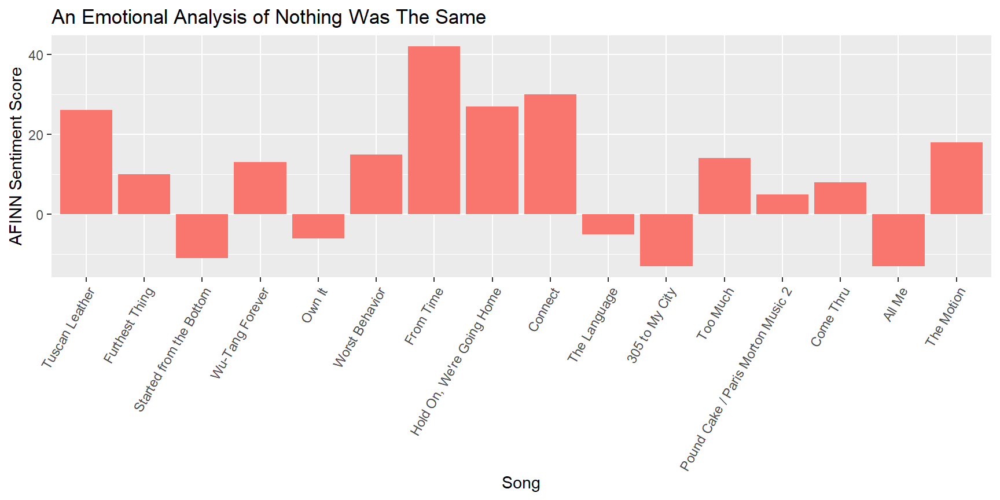

Simran’s Music Analysis
Projects
“Old Drake” vs. “New Drake”
“Old Drake” vs. “New Drake”
Project Summary
Rapper/singer Aubrey Graham, who goes by the stage name Drake, is one of the most charted, streamed, and decorated artist in recent history. Having been in the music industry for well over ten years, Drake is subject to much critique over the transformation of his music throughout the decade, and this debate has coined the terms “Old Drake” and “New Drake.” A general consensus is that now he lacks the same lyricism ability that he used to possess in his older work. He is now criticized for submitting to mainstream tropes in music by making his music more radio friendly than “authentically” hip-hop. On the other hand of the debate, people don’t believe that this distinction between Old Drake and New Drake actually exists, but rather it is an unfounded critique that comes with the territory of being successful. These people claim that Drake’s new music is not much different than his old music, but his new music is subjected to more hate because of his stardom. This analysis aims to answer the question: is there a difference between “Old Drake” vs. “New Drake,” and if so, what are these differences? Through data, can we validate the claims that Drake’s new music lacks lyrical quality and follows more traditionally “mainstream” patterns of music?
I tackle the question of Old Drake vs. New Drake through data visualization. In terms of lyrics, I’ve acquired all of the lyrics to Drake’s major projects from 2006 to present via Genius. I use the tidytext library in R to analyze the density of the lyrics, and I use the NRC Emotion Lexicon in R to get data on the sentiment/sentimental substance of Drake’s lyrics. In tandem with this, I used the “spotipy” package in Python to get audio data on Drake’s songs. For some of this analysis, I used logistic machine learning in Python to judge Drake’s sound. I merged audio and lyrical data into one dataset, and have used the plotly and ggplot2 libraries in R to create visuals. Here are the main visuals that demonstrate the differences in question. The plots reveal insights that are not intuitive just by listening to his music, and some observations are contradictory to the mainstream consensus. A few of these graphs are interactive, and you can hover to see song titles or summary data.
Beyond identifying the distinction between Old Drake and New Drake, the point of this project is to emphasize how we can look at music differently through data. Often conversations like Old Drake vs. New Drake arise, and data, especially data visualization which summarizes findings in an easily digestible way, adds a new twist to these conversations about music. We can see through the plots that Drake’s lyricism has changed, but instead of having the mainstream quality of being repetitive, it has just become less emotional. In addition, his music has become more radio friendly with the increasing levels of danceability, but he is not becoming more ‘pop’ as people suggest. These are just a few findings. With my own experience doing this project, data visualization has changed the way I listen to music as I’ve added another level in the ways that I experience music.
How Lyrically Repetitive is Old Drake vs. New Drake
Is Old Drake or New Drake More Emotional?
 
Can Machine Learning Accurately Predict Old Drake vs. New Drake?
Is New Drake More Pop than Old Drake?
Does New Drake Only Make Radio Friendly Music?
Exploratory Sentiment Analysis of Drake
Exploratory Sentiment Analysis of Drake
Introduction
I used data from Genius to compile a spreadsheet of all of Drake’s lyrics from his albums because I wanted to explore trends in the sentiments. I used “lexicon” in tidytext. Given that Drake’s lyrics contain a lot of slang, obviously this lexicon could not provide a wholly accurate depiction of the sentiments in his lyrics. Thus this analysis is mostly exploratory in nature.
Genius had data for the albums Comeback Season, If You’re Reading This It’s Too Late, More Life, Nothing Was the Same, Room for Improvement, So Far Gone, Take Care, Thank Me Later, Views, and Scorpion. There were a few other albums listed on the website, but those were either too short to be significant for this analysis, or they were almost identical to another album with only a handful of added songs. Singles that are not tied to an album were not included. For the sake of brevity in writing the code and for the appearance of the graphs, If You’re Reading This It’s Too Late is simplified to IYRTITL and Nothing Was the Same is simplifeid to NWTS.
tf-idf score
The letters tf stands for term frequency whereas idf stands for inverse document frequency. A tf-idf score is essentially the frequency of a word in a document given the frequency of word in a whole collection of documents. For this analysis, that means a word with a high tf-idf score for an album appears more uniquely frequently in that album than any other album. We can get a general sense of how an album distinguishes itself by looking at words with the highest tf-idf scores.

Several qualitative observations can be made from this. IYRTITL has words like “preach” and “woes” as well as “lonely” and “leaving” as its top words, perhaps indicating that it is an emotional album with a range of positive and negative emotions. We can also see the trend of the sonic qualities of his words over time with his use of unique words such as “skrrt”, “ga”, “mo”, “ay”, etc.
bing positive and negative sentiments
The lexicon package has a lexicon called bing that codes whether a word is positive or negative. This graph shows the proportion positive and negative words for each album.

afinn sentiment score
The AFINN score also exists within the lexicon package, and it measures the intensity of a word from -5 to 5. A word with a -5 score would be considered amongst the most foul in the English language.
From looking at the list of words with low afinn scores, I could already tell that hip-hop music vernacular would not translate because some low-ranked words could actually mean something positive with different context. Given the high rate of these words in songs, I made an executive decision to remove them so that they would not affect the score.
I organized the songs by album and then the order in which they appeared in the album, then assigned the song a number so I could perform a time series analysis. Song 1 is the first song in his first project Room for Improvement and song 203 is his last song in Scorpion.
## Warning: Column `word` joining character vector and factor, coercing into
## character vector
I included more graphs for a few individual albums.

I also included an emotional analysis of what is popularly deemed one of Drake’s saddest songs, Marvin’s Room.

nrc emotional lexicon
To get a better grasp of the specific emotions, I tracked Drake’s lyrics using the nrc lexicon. This lexicon has eight basic emotions: anger, fear, anticipation, trust, surprise, sadness, joy, positive, and negative. In the first graph, which is the top albums of each sentiment, take notice in how Drake’s older albums dominate the lists. This suggests that his older albums had more emotional substance than his newer ones.


In relation to the above, I also wrote code to capture the top song of a few of the sentiments.
saddest songs
| album | song | n |
|---|---|---|
| Take Care | Shot for Me | 0.0290557 |
| Take Care | Buried Alive | 0.0281385 |
| More Life | Jorja Interlude | 0.0261194 |
| Comeback Season | Intro | 0.0250000 |
| Comeback Season | The Last Hope | 0.0249307 |
| Room for Improvement | U.P.A. | 0.0240964 |
| Comeback Season | Asthma Team | 0.0234604 |
| So Far Gone | The Calm | 0.0234114 |
| Room for Improvement | A Scorpio’s Mind | 0.0223881 |
| So Far Gone | Brand New | 0.0219780 |
| Room for Improvement | Bad Meaning Good | 0.0212264 |
| Take Care | Over My Dead Body | 0.0204082 |
| Take Care | Headlines | 0.0184255 |
| So Far Gone | Lust for Life | 0.0181818 |
| So Far Gone | Say What’s Real | 0.0177515 |
most joyful songs
| album | song | n |
|---|---|---|
| Views | Summers Over Interlude | 0.0581395 |
| Room for Improvement | Extra Special | 0.0381166 |
| Room for Improvement | U.P.A. | 0.0301205 |
| IYRTITL | Wednesday Night Interlude | 0.0284360 |
| Comeback Season | Asthma Team | 0.0263930 |
| More Life | Madiba Riddim | 0.0263158 |
| Views | Weston Road Flows | 0.0250991 |
| Scorpion | 8 Out Of 10 | 0.0238663 |
| Scorpion | I’m Upset | 0.0238663 |
| NWTS | From Time | 0.0235911 |
| Thank Me Later | 9AM in Dallas | 0.0235479 |
| Scorpion | Final Fantasy | 0.0228758 |
| Scorpion | Ratchet Happy Birthday | 0.0228758 |
| Take Care | Lord Knows | 0.0224439 |
| Comeback Season | Must Hate Money | 0.0222222 |
angriest songs
| album | song | n |
|---|---|---|
| Room for Improvement | Drake’s Voice Mail Box #2 | 0.0416667 |
| Comeback Season | The Last Hope | 0.0332410 |
| Room for Improvement | A Scorpio’s Mind | 0.0268657 |
| Take Care | Shot for Me | 0.0266344 |
| Take Care | Buried Alive | 0.0259740 |
| Comeback Season | Intro | 0.0250000 |
| Comeback Season | Going in for Life | 0.0227273 |
| Room for Improvement | Try Harder | 0.0223881 |
| Comeback Season | Share | 0.0222222 |
| So Far Gone | Brand New | 0.0219780 |
| Scorpion | 8 Out Of 10 | 0.0214797 |
| Scorpion | I’m Upset | 0.0214797 |
| So Far Gone | Ignant Shit | 0.0214031 |
| Room for Improvement | Bad Meaning Good | 0.0212264 |
| IYRTITL | Know Yourself | 0.0207972 |
conclusion
As a brief conclusion, given that this is mostly exploratory and a direct question was not asked, one thing to note is how Drake’s older music tends to have more emotion/sentiment than his newer music. This could bring us to ask the difference between “Old Drake” vs. “New Drake.”